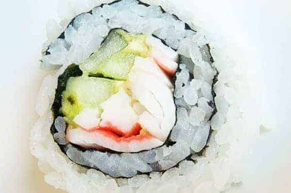

Sushi

Desciption
Rice covered sushi paper, filled with cucumber and crab. This recipe is simple yet amazing tasting dish. The crab and cucumber pair well with one another.
Ingredients
Steps
- Follow instructions to cook the rice
- Lay nori flat and lay cooked rice on top
- Flip the nori over
- Thinly cut cucumber into sticks and lat on top of nori
- Do the same with the crab
- Lastly roll up the flat nori and enjoy